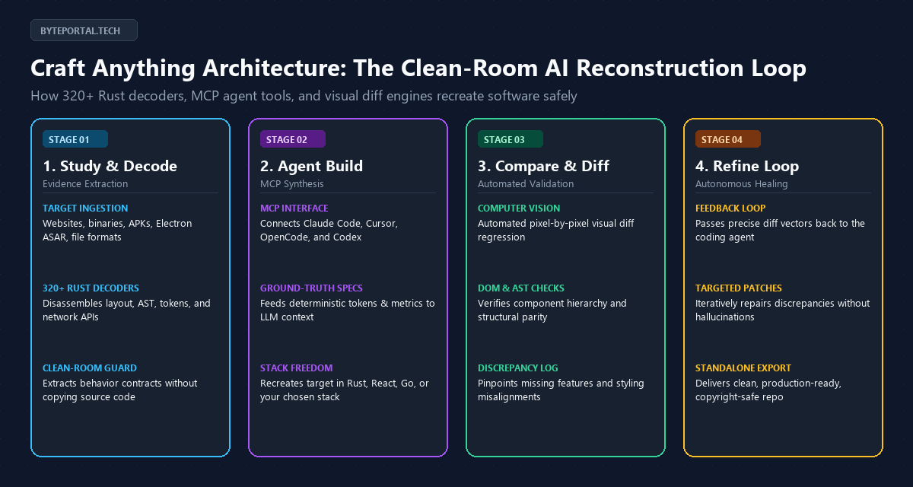

Craft Anything: Reverse-Engineer & Rebuild Apps with AI
· 5 min read
You find an impressive web tool, SaaS dashboard, or desktop utility and wish an open-source equivalent existed. You screenshot the interface, paste it into an AI coding assistant, and ask it to clone the app. Ten minutes later, you are untangling hallucinated CSS metrics, broken API contracts, and missing component hierarchies.
AI coding agents do not fail because they cannot write code. They fail because you gave them vague visual impressions instead of ground-truth architectural specifications.
A new open-source project from Brandon Thomas and the ArtCraft ecosystem solves this disconnect. Craft Anything (getartcraft.com/apps/craft-anything) is a pure-Rust software exploration and reconstruction engine. Equipped with over 320 built-in decoders, disassemblers, and layout inspectors, it extracts concrete behavioral evidence from existing software and pairs with AI coding agents to recreate clean-room applications with automated visual and functional verification.
Quick Summary (The Short Version)
- • What it is: A pure-Rust desktop app and CLI (`craft-anything-cli`) packed with 320+ decoders that inspect websites, native binaries, Electron packages, and mobile APKs.
- • The 4-Stage Loop: Follows a structured workflow: Study (extract evidence), Build (agent writes code in your chosen stack), Compare (automated pixel and DOM diffs), and Refine (iterative self-healing).
- • MCP-First Integration: Exposes native Model Context Protocol (MCP) endpoints, allowing agents like Claude Code, Cursor, and OpenCode to query target specifications autonomously.
- • Clean-Room Safety: Default clean-room mode extracts external behavioral contracts and visual tokens without copying proprietary source code, ensuring copyright-compliant rebuilds.
The problem: why AI "vibe coding" falls short on complex apps
Vibe coding works well for a two-page form or a basic calculator. But when you ask an LLM to clone a complex desktop editor like Photoshop or a multi-tab web tool like Linear, the model has to invent everything beneath the surface.
It guesses the bounding boxes. It guesses how padding scales across viewports. It invents arbitrary state management hooks. When you run the output, the interface looks slightly off and key edge-case behaviors fail silently.
Craft Anything eliminates the guesswork. Instead of feeding the model a compressed JPG, Craft Anything's Rust engine conducts deterministic extraction. It inspects CSS computed styles, measure pixel margins, records network payloads, catalogs font families, and converts UI hierarchies into structured JSON. The AI agent receives ground-truth engineering specs before it writes its first line of code.

The 4-stage reconstruction loop
Craft Anything structures software exploration into four autonomous phases:
- Study (Evidence Ingestion): You point Craft Anything at a URL, an Electron ASAR bundle, an Android APK, or a compiled binary. Its 320+ decoders analyze layouts, extract design tokens, parse protocol payloads, and catalog UI components into an evidence database.
- Build (Agent Synthesis): An AI coding agent (connected via MCP) reads the evidence log. You specify your target tech stack—such as pure Rust with WGPU, Next.js with Tailwind, or Go with SQLite—and the agent scaffolds the project.
- Compare (Automated Verification): Craft Anything runs both the original target and your newly generated build side by side. It executes computer vision pixel diffs, checks DOM depth, and runs behavioral integration tests, highlighting exact discrepancies.
- Refine (Autonomous Healing): Discrepancy logs are passed back into the agent context as structured error vectors. The agent applies surgical patches until visual and functional parity is reached.
Clean-room mode vs Deep disassembly mode
Reverse engineering carries legal and ethical considerations. Craft Anything addresses this directly with two distinct operational modes:
| Feature | Clean-Room Mode (Default) | Deep Inspection Mode |
|---|---|---|
| Inspection Scope | External observations only (rendered DOM, colors, metrics) | Internal binaries, bytecode, symbols, and network traces |
| Source Code Access | Zero access; proprietary source is never inspected | Decompiles bytecode (.NET, Java, ASAR, Ghidra bridge) |
| Legal Safety | Copyright-compliant clean-room reconstruction | Restricted to authorized code audits and security research |
| Primary Use Case | Building open-source replacements for proprietary web tools | Security auditing, protocol reverse engineering, file format decoding |
How to run Craft Anything via CLI and MCP
Craft Anything is distributed as a cross-platform desktop application and a standalone command-line binary. You can install and initialize it using Cargo:
# Install Craft Anything CLI
cargo install --git https://github.com/storytold/craft-anything craft-anything-cli
# Start an evidence collection study on a target web tool
craft-anything study https://example.com/editor --mode clean-room
# Launch the MCP server to bridge with Claude Code or Cursor
craft-anything mcp --port 8080Once the MCP server is active, add it to your coding agent configuration (such as claude_desktop_config.json or Cursor's MCP panel). The agent gains direct access to tools like get_layout_metrics, extract_design_tokens, and run_visual_diff.
What Craft Anything is not
Honesty builds better engineering habits. Craft Anything is a precision instrument, not magic:
- Not a 1-click piracy button: It does not crack software, bypass authentication paywalls, or copy proprietary intellectual property. Clean-room development creates new implementations inspired by functional behavior.
- Not a replacement for architectural thinking: While the engine automates token extraction and visual diffing, deciding how backend databases, security models, and scaling tiers operate still requires human supervision.
- Deep mode requires technical fluency: Analyzing raw assembly or unpacked firmware requires familiarity with disassemblers, intermediate representations, and binary formats.
The takeaway
The ArtCraft ecosystem demonstrated that modern systems engineering in Rust can cleanly recreate complex creative suites like PhotoCraft without corporate bloat. Craft Anything takes that philosophy one step further: it packages the reverse-engineering methodology into an open-source toolchain that any developer can run alongside an AI coding agent.
Check out the official documentation at getartcraft.com/apps/craft-anything and explore the source code on GitHub.